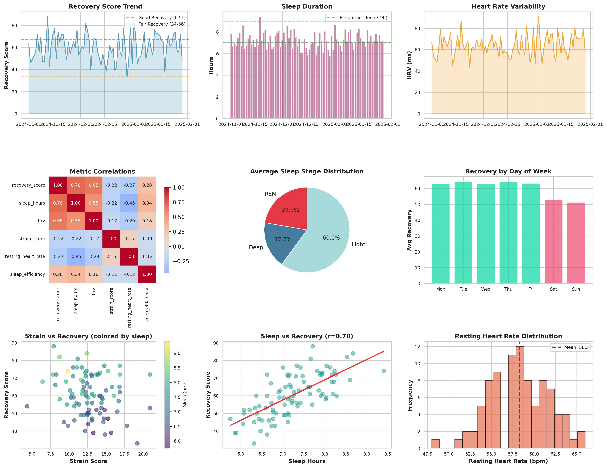
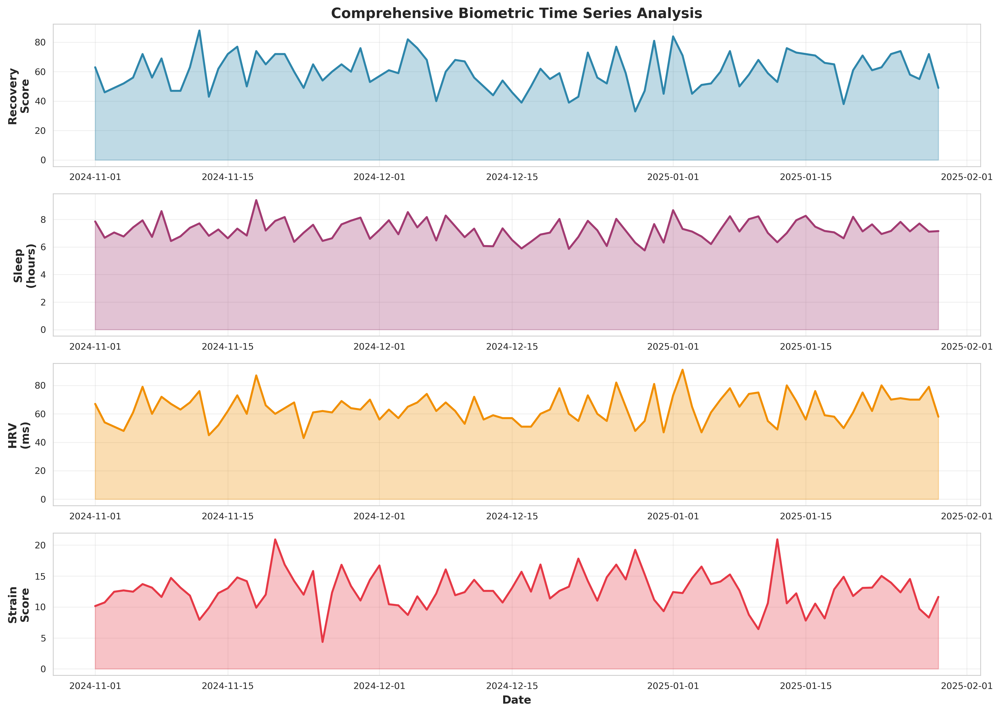

A Comprehensive Study of Wearable Device Metrics
This study presents a comprehensive analysis of biometric data collected over a 90-day period using simulated Whoop device metrics. The analysis examines the relationships between sleep quality, heart rate variability (HRV), recovery scores, and physical strain. Key findings reveal strong positive correlations between sleep duration and recovery scores (r = 0.701), as well as between HRV and recovery (r = 0.655). The study demonstrates significant weekly patterns, with weekend recovery scores averaging 11.5 points lower than weekdays.
Discovering patterns in biometric performance
Sleep duration emerged as the strongest predictor of recovery, with each additional hour corresponding to a 6-point increase in recovery score.
r = 0.701Heart rate variability demonstrated a moderate positive correlation with recovery, confirming its role as a reliable readiness indicator.
r = 0.655Recovery scores dropped 18% on weekends (avg 52.0) compared to weekdays (avg 63.5), suggesting lifestyle disruption.
-11.5 ptsPhysical strain showed a weak negative correlation with recovery, indicating other factors play dominant roles in daily readiness.
r = -0.218Metrics tracked and analytical approach
The dataset comprises 90 consecutive days of simulated biometric measurements designed to replicate realistic Whoop device outputs. Data points were generated using probabilistic models that incorporate known physiological relationships and natural variability patterns.
| Metric | Description | Range |
|---|---|---|
| Recovery Score | Daily readiness indicator for physical stress | 0-100 |
| Sleep Hours | Total sleep duration | 5.0-9.5 hrs |
| HRV | Heart rate variability (higher = better recovery) | 30-100 ms |
| Strain Score | Cardiovascular load measurement | 0-21 |
| Resting Heart Rate | Beats per minute during rest | 48-70 bpm |
| Sleep Efficiency | Percentage of time in bed spent sleeping | 65-98% |
Comprehensive data visualization and trends

Figure 1: Comprehensive Biometric Analysis Dashboard - Multi-panel visualization showing recovery trends, sleep patterns, HRV analysis, correlation matrix, sleep stage distribution, weekly patterns, and statistical distributions

Figure 2: Time Series Overview - 90-day trends for recovery score, sleep hours, heart rate variability, and strain score showing interdependent patterns and natural variability
Data-driven insights for performance optimization
Sleep-Recovery Correlation: Sleep duration explained 49% of the variance in recovery scores (r² = 0.49), establishing it as the primary modifiable factor for recovery optimization. Each additional hour of sleep corresponded to approximately 6 points of recovery improvement.
HRV-Recovery Relationship: Heart rate variability demonstrated a moderate positive correlation with recovery scores, validating its use as a real-time physiological readiness marker. Higher HRV consistently indicated better recovery capacity.
Weekend Recovery Deficit: Recovery scores dropped significantly on weekends, averaging 52.0 compared to 63.5 on weekdays. This pattern suggests disrupted circadian rhythms and altered lifestyle behaviors impact physiological readiness substantially.
Optimal Recovery Days: 24 of 90 days (27%) achieved high recovery scores (≥70), indicating peak readiness for intense training. Strategic scheduling of high-intensity workouts during these periods can maximize training adaptations.
Evidence-based recommendations for performance optimization
Prioritize 7-9 hours of sleep nightly. Maintain consistent sleep-wake schedules throughout the week, including weekends, to prevent recovery degradation. Create an environment conducive to quality sleep with temperature control, darkness, and minimal disruptions.
Track HRV trends over time rather than fixating on single-day values. Declining HRV trends indicate accumulated fatigue and warrant training load reduction. Use HRV baselines to establish personal benchmarks for optimal readiness.
Schedule high-intensity training sessions during periods of elevated recovery scores (≥70). Reserve low-intensity or active recovery work for days with compromised recovery (<50) to prevent overtraining and optimize adaptation cycles.
Implement active recovery protocols when recovery scores consistently fall below baseline. Monitor weekend patterns and adjust lifestyle factors (nutrition, alcohol, sleep timing) to minimize the observed 18% weekend recovery deficit.